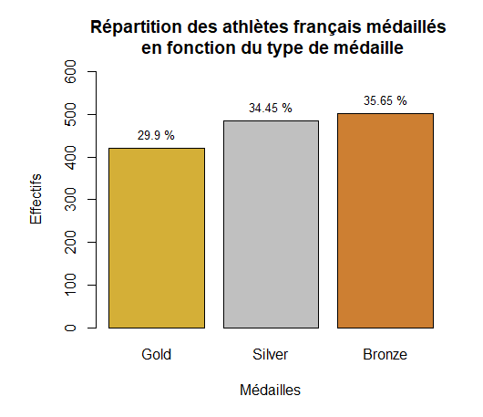
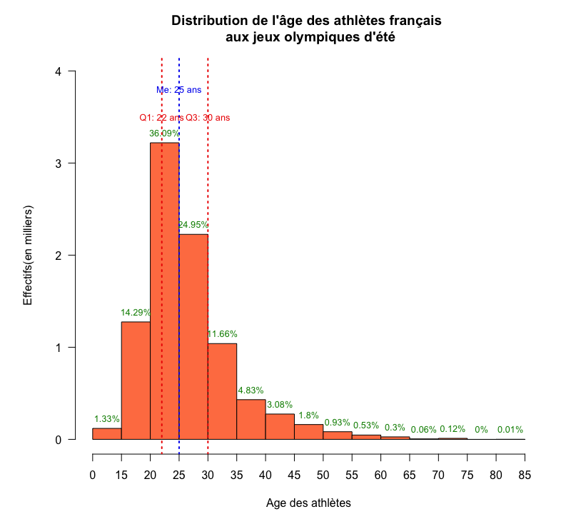
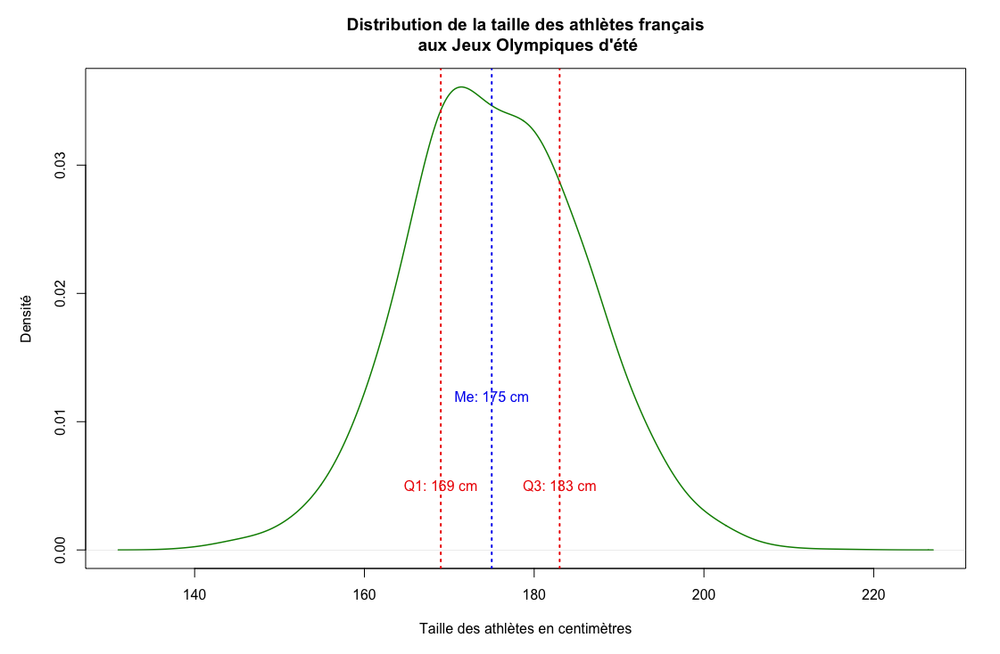

Ce projet portait sur l’analyse de données réelles relatives aux résultats des Jeux Olympiques depuis leur création. L’étude s’est concentrée sur les Jeux d’été et plus particulièrement sur la participation de la France. Les informations recueillies concernaient le sexe, l’âge, la taille des athlètes français ainsi que les médailles remportées.
Concernant le type de médailles obtenues, la distribution est relativement équilibrée : 29,9 % de médailles d’or, 34,45 % d’argent et 35,65 % de bronze. 
L’histogramme suivant illustre la répartition des athlètes selon leur tranche d’âge (en milliers). Les quartiles (Q1, médiane, Q3) y sont représentés par des lignes verticales. L’âge des athlètes français varie entre 12 et 85 ans, avec une concentration marquée entre 15 et 40 ans, période correspondant au pic de performance sportive. La présence de participants très jeunes (jusqu’à 12 ans) et très âgés (jusqu’à 81 ans) montre que l’âge n’est pas une contrainte à la participation aux JO. Le premier quartile est situé à 22 ans, et la médiane à 25 ans, ce qui signifie que la moitié des athlètes ont au moins 25 ans. 
La taille des athlètes quant à elle, varie globalement entre 158 cm et 200 cm, ce qui suggère deux grands profils physiques. Le premier quartile se situe à 169 cm, indiquant que trois athlètes sur quatre mesurent plus de 169 cm. Dans l’ensemble, les athlètes français se distinguent ainsi par une stature relativement élevée. 
This project focused on analyzing real-world data related to Olympic Games results since their creation. The study specifically examined the Summer Games, with a particular focus on France’s participation. The collected data included variables such as gender, age, height of French athletes, and the medals they won.
Regarding the types of medals obtained, the distribution is fairly balanced: 29.9% gold, 34.45% silver, and 35.65% bronze.
The following histogram shows the distribution of athletes by age group (in thousands). Quartiles (Q1, median, Q3) are represented by vertical lines. French athletes’ ages range from 12 to 85 years old, with a strong concentration between 15 and 40 — the peak period of athletic performance. The presence of very young participants (as young as 12) and older ones (up to 81) demonstrates that age is not a limiting factor for Olympic participation. The first quartile is at 22 years and the median at 25, meaning half of the athletes are at least 25 years old.
As for height, it generally ranges between 158 cm and 200 cm, suggesting two main physical profiles. The first quartile is at 169 cm, indicating that three out of four athletes are taller than 169 cm. Overall, French athletes stand out for their relatively tall stature.